La Station Du Trou Blanc
La Station du Trou Blanc est une petite station spatiale située à proximité du Trou Blanc, un phénomène gravitationnel situé à l'opposé du Trou Noir du système solaire.
La station est constituée d'une structure métallique compacte, organisée autour d'un immense portail de distorsion. Celui-ci permet à la matière de ressortir du Trou Blanc après avoir été aspirée par le Trou Noir.
Le phénomène possède une particularité étonnante : un objet peut apparaître à proximité du Trou Blanc avant même d'être entré dans le Trou Noir. Le trajet entre les deux points ne se déroule donc pas simplement dans l'espace, mais implique également un décalage temporel.
La station permet d'observer directement ce phénomène. Des morceaux de matière et des objets peuvent être expulsés du Trou Blanc à grande vitesse, créant un environnement difficile à anticiper autour de la structure.
La Station du Trou Blanc est ainsi un endroit entièrement construit autour d'un phénomène de distorsion de l'espace et du temps. Elle constitue un point d'observation unique sur le système solaire